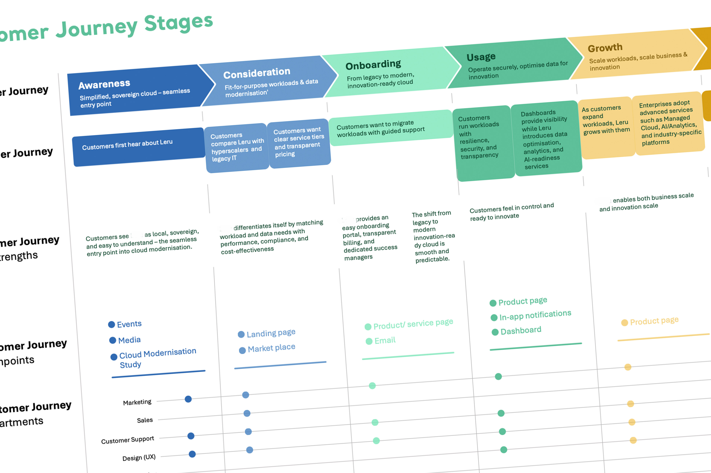

Spectrum Analytics (internal) — sovereign cloud services initiative · CloudStack platform configured by partner.

Spectrum Analytics was preparing to launch sovereign cloud services. The market was already mature — AWS, Azure and GCP dominated the global conversation, regional providers had familiar offerings, and customers were used to a particular flavour of self-serve cloud.
The strategic question for the design side was specific: in a market where the underlying capabilities were largely commoditised, where could customer experience itself be a differentiator? The answer wasn't going to come from copying hyperscaler patterns. It needed real research.
I led competitive UX research across AWS, Azxure, GCP, and several local cloud providers, comparing how customers discover services, configure deployments, get support, and pay. The research surfaced clear patterns about where each provider made the customer's life easier or harder.
From there, I mapped end-to-end customer journeys for a sovereign-cloud customer — first contact through service selection, deployment, ongoing operations, and support. I designed the self-service journeys with particular attention to the moments where customers typically have friction in the competitor analysis.
Once the research and design specifications were complete, the work was handed to a partner team configuring the underlying CloudStack platform (Cloud Management Platform). The deliverable wasn't a shipped product — it was the foundation for one.